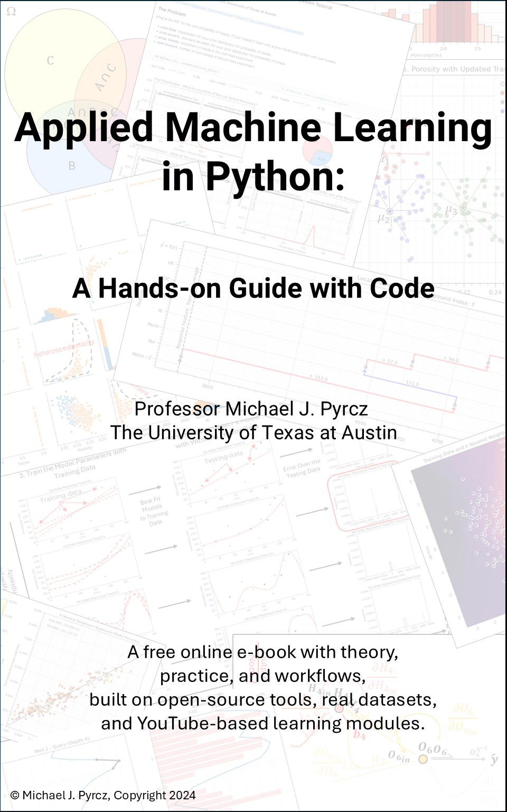
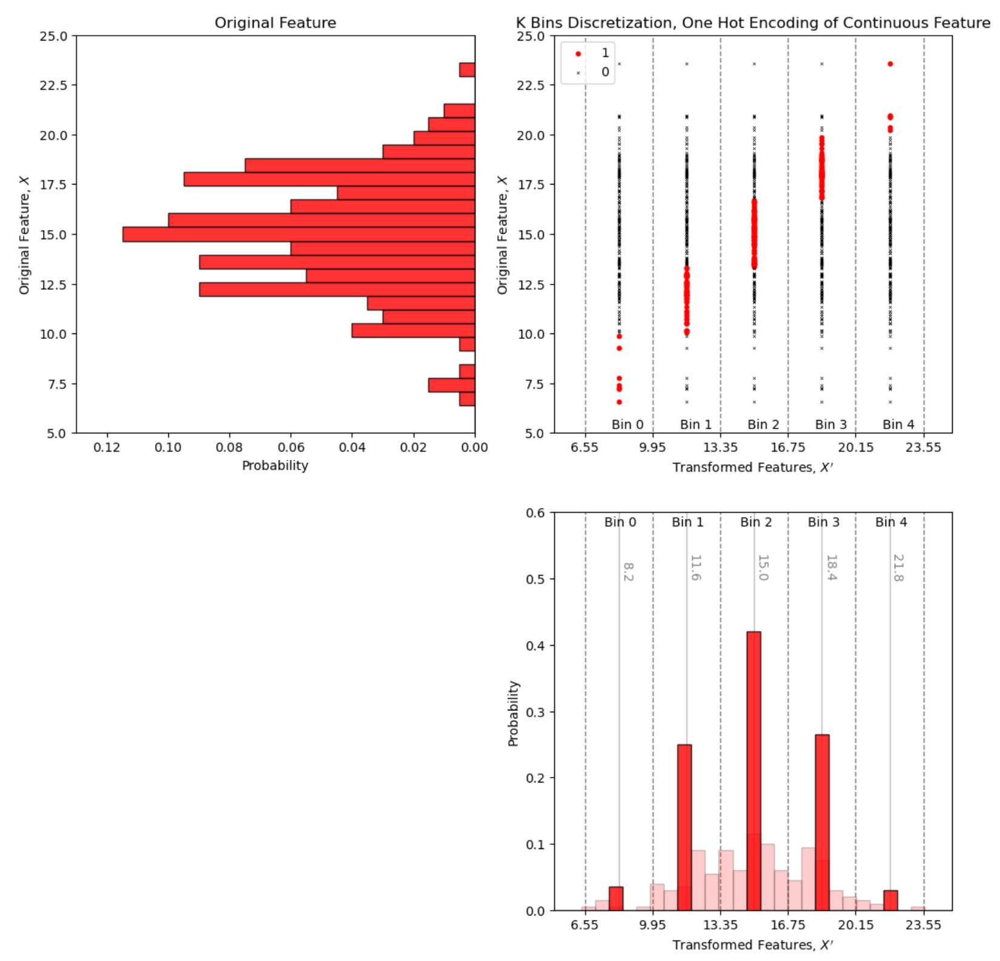
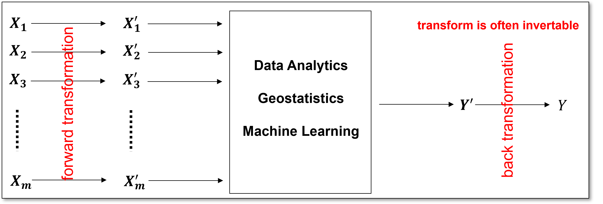
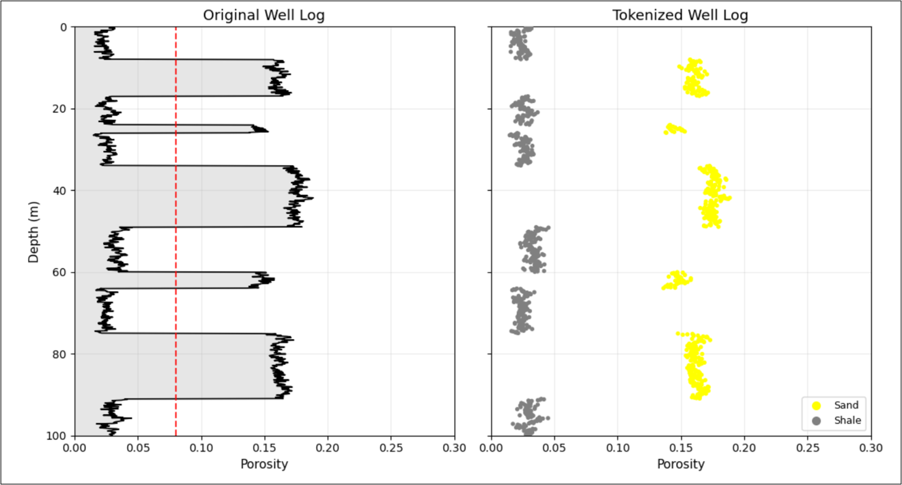
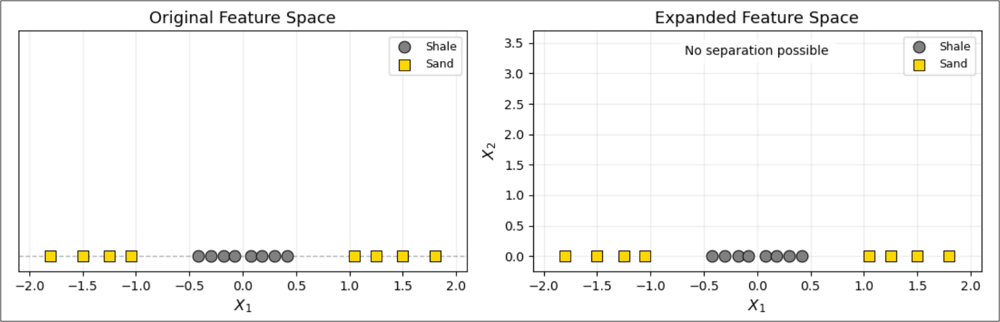
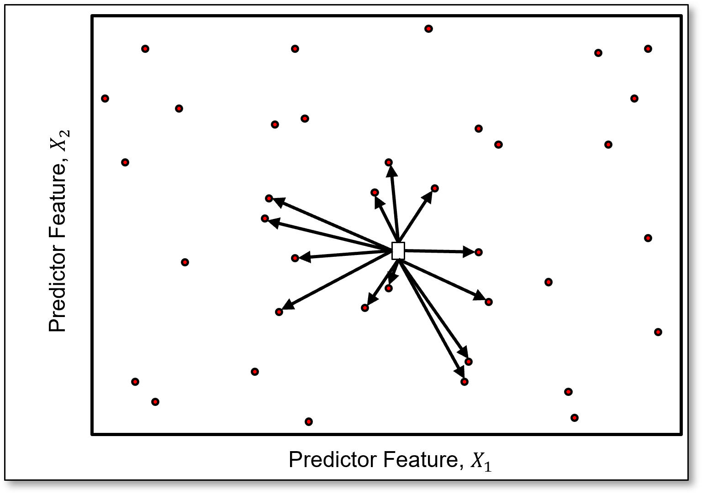
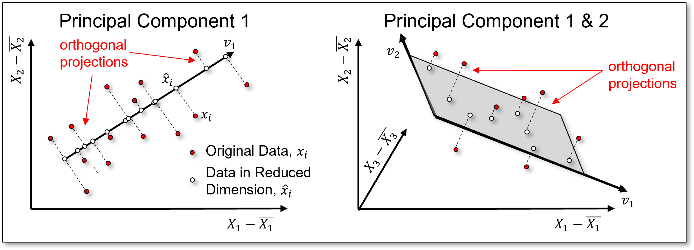
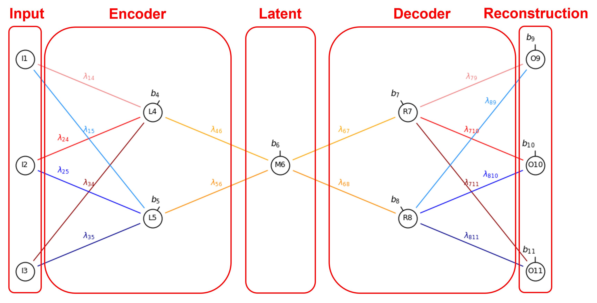

Representation Learning#
Michael J. Pyrcz, Professor, The University of Texas at Austin
Twitter | GitHub | Website | GoogleScholar | Geostatistics Book | YouTube | Applied Geostats in Python e-book | Applied Machine Learning in Python e-book | LinkedIn
Chapter of e-book “Applied Machine Learning in Python: a Hands-on Guide with Code”.
Cite this e-Book as:
Pyrcz, M.J., 2024, Applied Machine Learning in Python: A Hands-on Guide with Code [e-book]. Zenodo. doi:10.5281/zenodo.15169139 
The workflows in this book and more are available here:
Cite the MachineLearningDemos GitHub Repository as:
Pyrcz, M.J., 2024, MachineLearningDemos: Python Machine Learning Demonstration Workflows Repository (0.0.3) [Software]. Zenodo. DOI: 10.5281/zenodo.13835312. GitHub repository: GeostatsGuy/MachineLearningDemos 
By Michael J. Pyrcz
© Copyright 2024.
This chapter is on Representation Learning. For this chapter there is no code, nor demonstrations. We focus on concepts, along with potential opportunities and issues, and link to other chapters for demonstrations.
YouTube Lecture: check out my lectures on:
These lectures are all part of my Machine Learning Course on YouTube with linked well-documented Python workflows and interactive dashboards. My goal is to share accessible, actionable, and repeatable educational content. If you want to know about my motivation, check out Michael’s Story.
Motivation#
Machine learning is not just about choosing the right algorithm; it is also about how we represent our data. Raw observations often need to be transformed into more meaningful forms that reveal patterns, capture relationships, and incorporate expert knowledge.
Two approaches to representation learning: tokenization, which transforms observations into meaningful categories, and embeddings, which transform data into new feature spaces to expose useful patterns.
Better representations can lead to better machine learning!
Representation Learning#
What is Representation Learning?
Raw data are not always in the most useful form for analysis.
Representation learning transforms data to make important information, patterns, and relationships easier to recognize.
Representations can incorporate expert knowledge or be learned from data.
The objective is to create a representation that is useful for a particular task.
The way we represent data influences what a machine learning model can learn. There are 2 general methods for representation learning,
Tokenization
Continuous observations → discrete, meaningful categories.
Expert knowledge and context help define the tokens.
Embeddings
Original features → transformed numerical representation.
New feature spaces can expose patterns and relationships.
Tokenization and embeddings are complementary approaches, not competing methods.
Tokenization#
Tokenization is moving from measurements to meaning. For example,
Continuous well-log measurements contain information about subsurface properties.
Geological interpretation converts measurements into meaningful geological categories.
Tokenization can incorporate, for example,
thresholds
thickness
spatial continuity
geological context
expert interpretation.
The result is a more interpretable representation that can support subsequent modeling.
once geological categories are defined, they can be converted into numerical representations using encoding methods such as one-hot encoding,

Feature Transformations#
Feature transformations modify the representation of data to improve its usefulness for analytics, geostatistics, and machine learning. Transformations may be applied,
to a predictor feature prior to input into a predictive model
to a response feature prior to or following a predictive model
to any feature to improve an inferential or predictive workflow
to improve data visualization and interpretation

Interactive Tokenization Dashboard#
I provide an interactive dashboard demonstrating the tokenization of a porosity log using four levels of geological interpretation:
Level 1 – Sand or shale: based on a porosity threshold.
Level 2 – Thick channel: based on the thickness of intervals where porosity exceeds a threshold.
Level 3 – Channel or overbank: based on a threshold applied to a moving-window average.
Level 4 – Reservoir or non-reservoir: based on reservoir classification. In this example, all data are classified as reservoir.

The interactive dashboard is available on GitHub.
Embeddings#
Embeddings transform the feature space.
A feature space describes observations using their numerical features.
An embedding maps observations into a different numerical representation.
A useful representation can make important similarities and differences more apparent.
Feature transformations can reveal patterns that are difficult to recognize in the original feature space.
Method |
Connection to representation learning |
|---|---|
Gaussian Transform |
Provides a Gaussian representation that preserves marginal, conditional, and joint probability relationships. |
KNN |
Similarity and distance depend on the feature representation. |
PCA |
Constructs new features through linear combinations of the original features. |
MDS |
Constructs a lower-dimensional representation that attempts to preserve pairwise dissimilarities. |

The dashboard is available on GitHub.
Let’s put it all together now,
Tokenization – converting observations into meaningful discrete categories.
Feature transformations – modifying existing features to improve their usefulness.
Embeddings – constructing new numerical representations that capture useful patterns and relationships.
Common Machine Learning Methods the Utilize Feature Representation#
Here’s some examples of commonly used machine learning methods that utilize different forms of feature representation.
K-Nearest Neighbours#
K-Nearest Neighbours uses a distance-based representation – what are the nearest training samples in predictor feature space?
We rank samples by proximity in feature space.
The Euclidean distance between the \(i^{th}\) prediction sample and the \(k^{th}\) training sample is:
Given the distance separation from each of the nearest training samples, \(k=1,\ldots,K\), we calculate the associated data weight:
where \(w_k\) is the weight for the \(k^{th}\) nearest neighbor, retrieved from the weighting function.
The regression prediction model is then a linear weighted average:

Principal Components Analysis#
Principal components analysis (PCA) utilizes a linear, orthogonal transformation-based representation.
effectively, PCA rotates the feature space to maximize variance along the new coordinate axes. The first \(p\) principal components define a lower-dimensional representation that minimizes the orthogonal projection error.
The objective is to find \(V_p\), an orthogonal projection onto a new basis (a 1D vector, 2D plane, or higher-dimensional hyperplane), that minimizes the reconstruction error:
where,
\(V_p\) is a matrix of the first \(p\) principal component loading vectors.
\(X\) is a matrix with the original \(m\)-dimensional features.
\(\bar{X}\) is a vector of feature means.
\(v_i\) are the principal component scores.
\(\hat{X}_i\) are the reconstructed features in the original \(m\)-dimensional space.
The principal component scores are calculated as:
The reconstructed features in the original \(m\)-dimensional space are:

Multidimensional Scaling#
Multidimensional scaling (MDS) utilizes a representation that attempts to preserve dissimilarity.
Compresses data into a lower-dimensional space, generally 2D, while attempting to preserve pairwise distances or dissimilarities.
Provides a powerful inferential and visualization method. The locations and groupings of samples or images communicate their relative similarity.
Can be used to visualize uncertainty spaces and explore relationships among uncertain outcomes.
Autoencoder#
Autoencoders learn a latent-space-based embedding of the input data.
Input – original data samples, \(z\)
Encoder – learns to compress the input samples into a lower-dimensional representation, \(x=f_\theta(z)\)
Latent Space – compressed representation that captures patterns and relationships in the data, \(x\)
Decoder – learns to reconstruct the input from the latent representation, \(\hat{z}=g_\phi(x)=g_\phi(f_\theta(z))\)
Reconstruction – attempts to reproduce the original input, \(\hat{z}\approx z\)

Representation Learning#
Embeddings can be engineered, learned by machine learning algorithms, or developed through a combination of both.
Engineered representation |
Learned representation |
|---|---|
Transformation specified by the user |
Transformation inferred from data |
Expert knowledge is explicit |
Patterns are learned during training |
Examples: thresholds, polynomial features, geological tokens |
Examples: neural network embeddings, learned feature encoders |
Representations can be developed through:
hand-crafted geological categories.
engineered mathematical transformations.
data-driven representations.
learned embeddings in neural networks.
Limitations and Considerations#
Potential limitations and considerations for representation learning include:
Information loss: Tokenization can discard variation within categories.
Subjectivity: Expert-defined thresholds and categories reflect assumptions.
Task dependence: A useful representation for one prediction problem may not be useful for another.
Scaling and geometry: Feature transformations can change distances and relative feature importance.
Overcomplication: More dimensions or more tokens do not automatically mean better representations.
Representation Learning Summary#
Here is a summary of the salient concepts from this discussion:
Tokenization – transforms measurements into meaningful, interpretable categories.
Embeddings – transform observations into useful numerical representations.
Expert knowledge – can guide the design of engineered representations.
Representation choice – influences similarity, separation, and model performance.
Good representations – help machine learning models recognize useful patterns.
Want to Work Together?#
I hope this content is helpful to those that want to learn more about subsurface modeling, data analytics and machine learning. Students and working professionals are welcome to participate.
Want to invite me to visit your company for training, mentoring, project review, workflow design and / or consulting? I’d be happy to drop by and work with you!
Interested in partnering, supporting my graduate student research or my Subsurface Data Analytics and Machine Learning consortium (co-PI is Professor John Foster)? My research combines data analytics, stochastic modeling and machine learning theory with practice to develop novel methods and workflows to add value. We are solving challenging subsurface problems!
I can be reached at mpyrcz@austin.utexas.edu.
I’m always happy to discuss,
Michael
Michael Pyrcz, Ph.D., P.Eng. Professor, Cockrell School of Engineering and The Jackson School of Geosciences, The University of Texas at Austin
More Resources Available at: Twitter | GitHub | Website | GoogleScholar | Geostatistics Book | YouTube | Applied Geostats in Python e-book | Applied Machine Learning in Python e-book | LinkedIn
Comments#
This was a basic discussion of representation learning. Much more could be done and discussed, I have many more resources. Check out my shared resource inventory and the YouTube lecture links at the start of this chapter with resource links in the videos’ descriptions.
I hope this is helpful,
Michael